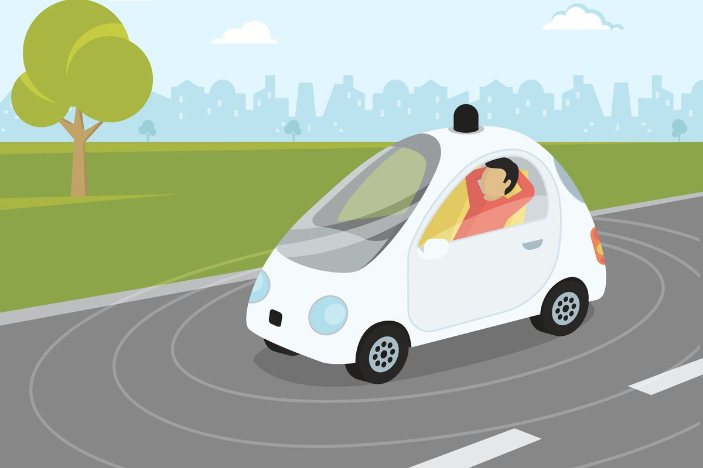

An Autonomous Vehicle is a vehicle which can drive itself. It can do this using technology that senses what it’s surroundings are. A human doesn’t need to drive the vehicle at any point or even be present in the vehicle itself. Autonomous Vehicles rely on sensors actuators, complex algorithms, machine learning systems, and powerful processors to execute software. They create a map of their surroundings based on the variety or sensors in the different parts of the car. Sensors also sense whether there's another vehicle nearby. Video cameras look for traffic lights, read road signs, track other vehicles nearby, and look for pedestrians. Lidar sensors are used to measure distances, detect road edges, and identify lane markings. Ultrasonic sensors in the wheels look for curbs and other vehicles when parking.
A robotaxi is one of the world’s only cars which doesn’t need an individual in the vehicle. It’s a taxi where u don’t need a person driving the vehicle and it picks and drops offs passengers to wherever. In February they were introduced to the public.
Pros of Autonomous Vehicles are the connivence. If someone is too young to drive but needs to get somewhere, self-driving cars are very useful or if you’re an elderly or disabled person who can’t drive having a self-driving car would be very convenient for your everyday life. Autonomous Vehicles may also lower CO2 emissions. There will be less cars per household, less gas burned or battery power, which is saving our environment. Cons of Autonomous Vehicles are how will the car be able to drive in rough weather conditions, tunnels, bridges, etc. And apparently, In the future in case of emergencies you can't even take the wheel which may cause more accident instead of less.